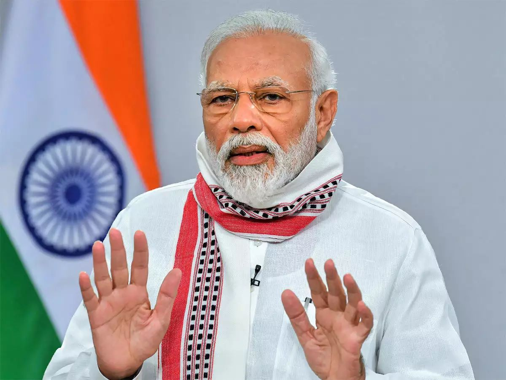
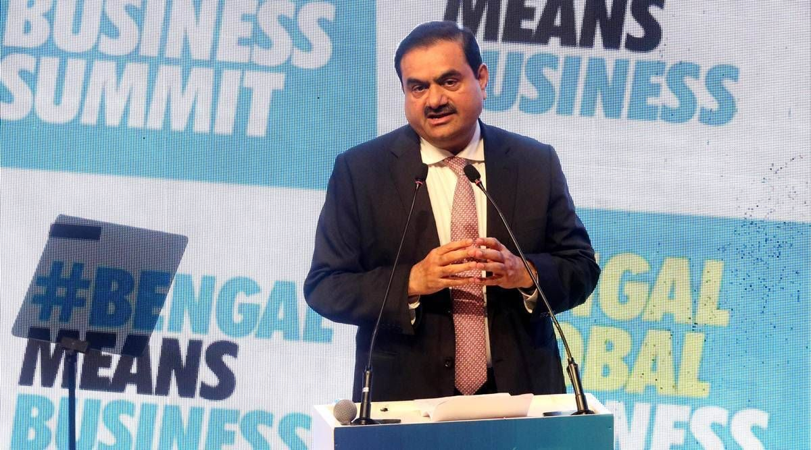

|
|  | MEA responds to anti-Modi BBC documentary on Gujarat riots, calls it a "propaganda piece"Last Updated: Dec 30, 2022, 13:26 IST India on Thursday dismissed a controversial BBC documentary series on Prime Minister Narendra Modi and described it as a "propaganda piece" that is designed to push a discredited narrative. Addressing a weekly media briefing External Affairs Ministry Spokesperson Arindam Bagchi asserted that this documentary show, based on some internal UK report, shows the colonial mindset. |
|  | Adani Enterprises now plans to enter water segmentLast Updated: Dec 30, 2022, 16:05 IST Adani Enterprises, which is launching India Inc's second-largest follow-on public offer worth Rs 20,000 crore next week, on Thursday said it is planning to enter the water segment as this is a key element of its core business of infrastructure, PTI reported. The group is into the entire gamut of infrastructure -- being its ports, airports, roads, expressways power generation & distribution, among others. In ports and airports, the group is the largest player in the private sector. |
©2022, All right reserved by Precisenews.com, Designed by: Harsh Tejaniya